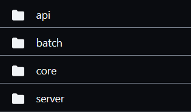
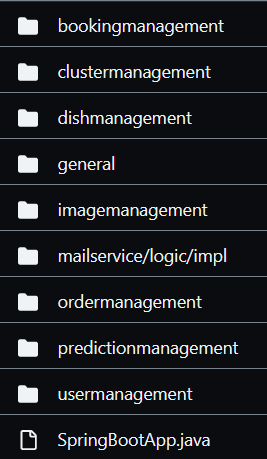

<!doctype html>
<html>
	<head>
		<meta charset="utf-8">
		<meta name="viewport" content="width=device-width, initial-scale=1.0, maximum-scale=1.0, user-scalable=no">

		<title>Hexagonal Architecture in practice</title>

		<link rel="stylesheet" href="dist/reset.css">
		<link rel="stylesheet" href="dist/reveal.css">
		<link rel="stylesheet" href="dist/theme/night.css">

		<!-- Theme used for syntax highlighted code -->
		<link rel="stylesheet" href="plugin/highlight/monokai.css">
		<link rel="stylesheet" href="css/custom.css">
	</head>
	<body>
		<div class="reveal">
			<div class="slides">
				<section data-markdown data-separator-vertical="^--$">
					<script type="text/template">
						# Hexagonal Architecture
						## in practice<!-- .element class="pink"-->
						---
						## Agenda

						* technical & orga info
						* length
						* lunch break
						---
						Why architecture?<!-- .element: class="r-fit-text"-->
						--
						[Design Stamina Hypotesis, M. Fowler](https://martinfowler.com/bliki/DesignStaminaHypothesis.html)
						
						--
						### Key takeaways

						* <mark>Good design</mark> makes code maintainable
						* Good design does not increase productivity
						* You can save short-term time by neglecting design (producing technical debt, though)
						--
						### <mark>Good architecture</mark> makes the code maintainable too

						* Good architecture separates concerns well
						* Key point is to keep business code separated from technical one
						* Business code is getting older slower than the technical one
						---
						
						--
						
						---
						What is <mark>hexagonal architecture</mark>?

						
						--
						Dependencies point <mark>inwards</mark>

						
						--
						Flow of control

						
						--
						what is core? (TBD)
						--
						### <mark>Key advantages</mark>
						#### of Hexagonal Architecture

						* <span class="pink">exposes domain</span> as the most important element
						* <span class="pink">separates</span> technical and business aspects
						* <span class="pink">screams out</span> the purpose of the system
						---
						# Let's code
						--
						### Document Management System

						
						--
						### Domain Driven Design

						event storming<!-- .element: class="cyan"-->

						
						--
						### Domain Driven Design

						bounded contexts<!-- .element: class="cyan"-->

						
						--
						### Hexagonal Architecture & DDD

						

						* DDD discovers _business architecture_ elements
						* Hexagonal Architecture promotes <mark>domain</mark>

						<!-- .element class="fragment"-->
						---
						### Live coding 1

						implementing `QueryRevisionById`
						--
						### Summary

						* Inbound web adapter using read model &#10004;
						* Outbound persistence adapter &#10004;
						* `QueryRevisionById` Service &#10004;
						* Subdomains visible as first level of directories (<mark>screaming</mark>) &#10004;
						---
						### Exercise 1
						implement `CreateRevision` with tests
						--
						### Summary

						1. Inbound web adapter using command pattern &#10004;
						2. Outbound persistence adapter &#10004;
						3. `CreateRevision` Service &#10004;
						4. ... or switch to branch `02-second-usecase-prep`
						---
						<!-- .slide: id="mapping"-->
						Mapping methods<!-- .element class="r-fit-text"-->
						--
						### What is <mark>mapping</mark>?

						> Mapping is a function that transforms data from one data structure to another data structure.

						<em>Mapping</em> is necessary when two layers use separate data models.
						--
						Potential mapping points in Hexagonal Architecture

						
						--
						### Mapping methods

						1. No mapping
						1. Two way mapping
						1. Full mapping
						1. One way mapping
						--
						### 1. No mapping

						

						<p><mark>Example</mark> JPA based db adapter and core share the same model.</p><!-- .element: class="subtitle"-->

						```java[]
						public void archiveRevision(RevisionId id) {
							var revision = queryRevisionByIdPort.query(id);
							revision.archive();
							saveRevisionPort.save(revision);
						}
						...
						public void save(Revision revision) {
							revisionRepository.save(revision);
						}
						```
						--
						### 1. No mapping

						<ul class="left-align pink no-ticks">
							<li>&#10004; no hassle to do the mapping</li>
							<li>&#10004; changes are automatically propagated</li>
							<li>&#10008; lack of separation - layers are tangled</li>
						</ul>
						--
						### 2. Two way mapping

						

						<p><mark>Example</mark> JPA based db adapter has different model than core</p><!-- .element: class="subtitle"-->

						```java[]
						public void archiveRevision(RevisionId id) {
							var revision = queryRevisionByIdPort.query(id);
							revision.archive();
							saveRevisionPort.save(revision);
						}
						...
						public void save(Revision revision) {
							var revisionRecord = revisionRepository.findById(revision.id());
							mapper.map(revisionRecord, revision);
							revisionRepository.save(revisionRecord);
						}
						```
						--
						### 2. Two way mapping

						<ul class="left-align pink no-ticks">
							<li>&#10004; full separation of layers</li>
							<li>&#10008; structures may be still semantically tangled</li>
							<li>&#10008; extra cost of implementing mappers</li>
							<li>&#10004; mapping cost reduced due to reusability</li>
							<li>&#10008; single change triggers multiple changes in use cases</li>
						</ul>
						--
						### 3. Full mapping
						
						<p><mark>Example</mark> Use separate model per use case in changing use cases</p><!-- .element: class="subtitle"-->

						```java[]
						public void createRevision(CreateRevisionCommand command) {
							var revision = Revision.create(command.title(), command.content());
							saveRevisionPort.save(revision);
						}
						```
						--
						### 3. Full mapping

						<ul class="left-align pink no-ticks">
							<li>&#10004; full separation of layers</li>
							<li>&#10004; full separation of use cases</li>
							<li>&#10004; low risk of semantical tangling</li>
							<li>&#10008; a lot of mapping code and extra data structures</li>
						</ul>
						--
						### Heuristics

						When to use which mapping method?

						_by Tom Hebrings_

						1. We can use different strategies between inbound and core and between core and outbound.<!-- .element class="cyan"-->
						2. We can use different strategies for reading and modifying use cases.<!-- .element class="pink"-->
						--
						### Heuristic #1

						> When working on <mark>modifying use case</mark>, the "full mapping" (aka command pattern)
						> is the first choice for <mark>web-core</mark> boundary.

						<ul class="left-align cyan no-ticks">
							<li>&#10004; clear use case separation</li>
							<li>&#10004; only needed fields are passed</li>
						</ul>
						--
						### Heuristic #2

						> When working on <mark>modifying use case</mark>, the "no mapping"
						> is the first choice for <mark>core-db</mark> boundary.

						<ul class="left-align cyan no-ticks">
							<li>&#10004; quickly evolve code without mapping overhead</li>
							<li>&#10004; can be turned into "two-way" as soon as persistence details start to leak</li>
						</ul>
						--
						### Heuristic #3

						> When working on <mark>a query</mark>, the "no mapping" is thee first choice
						> for <mark>web-core</mark> and <mark>core-db</mark> boundaries.

						<ul class="left-align cyan no-ticks">
							<li>&#10004; quickly evolve code without mapping overhead</li>
							<li>&#10004; can be turned into "two-way" as soon as persistence details start to leak</li>
						</ul>
						--
						### 4. One-way mapping
						
						--
						### 4. One-way mapping

						All models in all (or some) layers implement the same interface.

						<ul class="left-align pink no-ticks">
							<li>&#10004; no additional mappers are needed</li>
							<li>&#10004; still separation is possible thanks to non public parts</li>
							<li>&#10008; tight coupling of data structures</li>
						</ul>

						Fits well if data structures across layers are similar but "no mapping" is by some reason not suitable.
						---
						Mapping examples<!-- .element class="r-fit-text"-->
						--
						Example for <mark>master data</mark> service
						
						--
						Example for typical <mark>DevonFW</mark> service
						
						--
						# YES!

						> <span class="cyan">DevonFW</span> (layered architecture) is an instance of hexagonal architecture,
						> with <span class="pink">preselected</span> mapping methods.<sup>*</sup>

						<p><sup>*</sup>well... almost. You need to move entity
						declaration and repository interfaces from <code>dataaccess</code> to <code>core</code></p><!-- .element: class="fragment"-->
						--
						Example for <mark>deep system</mark> using <mark>CQRS</mark> style
						
						--
						Example for <mark>event sourcing</mark>
						
						---
						### Live coding 2

						1. Implementing `RequestVerification`
						2. Using asynchronous communication between subdomains using <mark>events</mark>
						--
						### Summary

						

						1. Inbound web adapter &#10004;
						2. Outbound event adapter &#10004;
						3. Outbound persistence adapter &#10004;
						4. `RequestRevision` Service &#10004;
						5. `PushRevisionToVerification` Service &#10004;
						---
						Subdomains can talk synchronously as well

						
						--
						### Exercise 2

						Implement `QueryRevisionPreview`
						--
						### Summary

						1. Set up depedency between `verification` and `preparation` &#10004;
						2. Inbound web adapter for preview &#10004;
						3. Outbound adapter to call preparation use case &#10004;
						---
						### Hexagonal architecture in a nutshell

						* Start from hex and then compare with layers
						* DDD & CQRS (Herberto Graca)
						* Shallow vs deep systems
						--
						### Different architecture style

						Three examples:

						* Everything in one class
						* Layered approach
						* Hexagonal approach
						---
						## Backup
						---
						<!-- .slide: id="screaming"-->
						Screaming architecture<!-- .element class="r-fit-text"-->

						or how to organize files using subdirectories<!-- .element: class="pink"-->
						--
						> When you look at the top-level directory structure,
						> and the source files in the highest-level package,
						> do they scream "Health Care System" or "Accounting system"
						> or "Inventory Management System"?

						Robert C. Martin,
						Clean Architecture: A Craftsman's Guide to Software Structure and Design<!-- .element class="cyan"-->
						--
						### What does this system do?

						<div class="r-hstack gap1">
							
							
						</div>

						<!-- .element class="fragment"-->
						--
						### Why is this a problem?

						* <mark>Technology</mark> overshadows <mark>business</mark>
						* Harder to onboard new developers
						* Imagine we have 20+ microservices...
						* Can architecture tell programmers <mark>where to put new code</mark>, ...?
						--
						### What does this system do?

						
						--
						### Can we scream louder?

						Hexagonal architecture

						
						--
						Make entities and use cases first class citizens

						
						--
						Most important parts should be the easiest to reach

						
						--
						Bury less important parts into subdirectories

						
					</script>
				</section>
			</div>
		</div>

		<script src="dist/reveal.js"></script>
		<script src="plugin/notes/notes.js"></script>
		<script src="plugin/markdown/markdown.js"></script>
		<script src="plugin/highlight/highlight.js"></script>
		<script>
			// More info about initialization & config:
			// - https://revealjs.com/initialization/
			// - https://revealjs.com/config/
			Reveal.initialize({
				hash: true,
				width: 1200,
				slideNumber: 'c/t',
				// Learn about plugins: https://revealjs.com/plugins/
				plugins: [ RevealMarkdown, RevealHighlight, RevealNotes ]
			});
		</script>
	</body>
</html>
